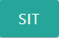
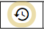

This is a 4-player Mahjong game. After selecting your username, you will be able to join any open game, or create a private invitational game. During gameplay, unfilled seats will be filled by robot players.
Begin by typing a username in (A). You may select any username that is not already reserved. Your username will identify you in the lobby, and in games once play starts.
If you would like to reserve your username so that no one else can use it, add your email address in field (B). Your email address acts as your password.
After signing in, if you would like to sign in with a different username, click on Sign out, as shown in Fig 2-F.
Each Mahjong game seats up to 4 players. Games can be either Public, or Invitational. The difference is that invitational games are private, and only players who are invited may join, whereas public games are open to anyone to join.
All players who are currently connected to the server are shown in the player panel (Fig 2-E).
The game server will ensure that there are always empty games available. In the Public Games section (Fig 2-C), wherever you see a button labelled as SIT, , that means that the seat is open, and you may sit there by clicking the button.
As soon as one player is seated, a start button will appear in the Status column. If you are not waiting for others to join, you can click the start button at any time. Empty seats will be automatically filled by robot players.
If you see a game with JOIN buttons, , this means the game has already started, but still has open seats. Clicking on any of the join buttons will immediately take you into that game, where you will replace a robot player.
You can create an invitational game by clicking the NEW GAME button (Fig 2-D). You will be listed as the owner of a new game with 4 open seats as shown in (Fig 3-D2), and you will have the option of inviting other players to your game. Only the owner and invited players can see the invitational game.
A game series means that the selection of dealer, wind, and scoring will run continuously through multiple games. When an in-progress game ends in a win (Woo) or a stalemate (because the deck runs out), the players may continue to the next game, with dealer and wind advancing according to the game rules.
When game-play has completed, and all players have left the game, the server will save a record of the game series, so that the players can continue the game at a later date. The saved game series will appear in the lower part of the Invitational Games section, and be visible only to players who participated in the game.
Game series controls are shown in Fig 3:-D3-D4-D5. In this example, there are two saved game series: one that was last played on 2021-09-12 (year-month-date), and another that was last played on 2021-09-18. Clicking on the date buttons in Fig 3-D4 will show a summary of the running game scores.
You can resume a past game series by clicking the resume icon, , found to the left of Fig 3-D3. This creates an invitational game with all past participants invited and listed as owners. Below each SIT button, the name of the most recent occupant of that seat will be shown.
Finally, if you are not interested in resuming a series, you can delete it from the server by clicking the trash icon in Fig 3-D5.
Fig 3-D6 shows additional controls for game owners. The chart icon, timeline, will show a summary of the scores of an in-progress game series, but only once the first game has completed. The orange stop icon, cancel, will terminate a game, ejecting any seated players.
After joining a game or starting a game in the lobby, your view switches to the game table. The game server will have already dealt needed tiles to each player, such that the dealer has 14 tiles, and each other player has 13 tiles. In addition, since flower tiles must always be played immediately, the game server will have already played all flower tiles, and dealt replacements.
Game plays starts with the dealer. When it is your turn, you can make optional plays if you have any available. Your turn ends when you discard a tile, or declare a win (Woo).
The game window includes play areas to display tiles for each of the 4 players (Fig 4: P1-P4). Your play area is at the bottom of the window, and includes your flowers & sets (Fig 4-F) and your unplayed tiles (Fig 4-P1). For the 3 other players, only flowers and sets are visible, with unplayed tiles remaining hidden.
The area in the upper left corner of the game window, shown in Fig 4-W, displays the current wind and the 4 most recently discarded tiles. The discarded tiles are also a button. Clicking on them will display a full history of discarded tiles for the current game.
Similarly, clicking on the SCORE HISTORY button displays a scoring summary since the beginning of the current game series.
Your unplayed tiles (Fig 4-P1) are initially sorted, with gaps between suit groupings. If you don't rearrange your tiles, the game will keep the tiles sorted by inserting newly drawn tiles in the appropriate sorted position.
You can also choose to rearrange your tiles as you wish. Moving any tile from its sorted position will disable the auto-sort tiles option shown in Fig 4-A1. If you prefer have the tiles sorted for you, you can re-enable this option. The gear icon, settings, in Fig 4-A2 displays the tile auto-sort settings.
If you rearrange your tiles, newly drawn tiles will appear at the end of the existing tiles. When you move a tile to a spot that's already occupied, the other tiles will shift over to make room. This allows you to move consecutive tiles with a single shift.
The replay UNDO A PLAY button, shown in Fig 4-U, allows you to undo the 4 most recent plays. This feature is in testing, and should only be used with the approval of other players.
Plays can be made in two situations:
When it's your turn, the most common situation is that your only possible play is to discard a tile. This is the case shown in Fig 4. The play selection area in the center of the screen shows only a discard as a possible play.
Occasionally, you may have optional plays. Fig 5 shows all four possible in-hand plays (5-J, 5-K, 5-L, 5-M):
The discard play placeholder shown in Fig. 5-J is not a button, and only serves to remind you that you can always choose to discard a tile. To discard a tile, drag any of your unplayed tiles above the red line shown in Fig. 5-D.
The 3 optional plays shown in Fig. 5-K, 5-L, and 5-M are buttons that you can click to select that action.
When you draw a flower tile, or make an optional Gng play that requires that a replacement tile be drawn, you will see the Draw button with a red center, as shown in Fig 5X. This means that the tile will be drawn from the flower pile. When a Woo (win) is declared after drawing from the flower pile, a 4 × score multiplier applies, which appears in the scoring table as "ztail/ 槓上開花".
When other players are taking their turn, you may be able to make a play on their discarded tile. In the example shown in Fig. 6, the player to your right, r-Easton, has discarded the tile in Fig. 6-R. You have two possible plays:
If the discarded tile came from any player other than the one on your right, the Draw button would be replaced with a Pass button. The purpose of the Pass button is to ensure that you have a chance to see the discarded tile, even if you cannot make a play on it.
When there are other humans in the game, you will occasionally see a Waiting for … panel such as the one in Fig 7-S.
For the example in Fig. 7, you have discarded the tile in Fig. 7-R, and you are waiting for other players to respond to your discard. A thinking animation appears for the players who have not yet responded, as shown in Fig. 7-T2 and Fig. 7-T4. If another player decides to make a play, that play will appear in their thought cloud.
If a human player leaves the game when the game is waiting on them for a response, a Robot Play button will appear next to their robot substitute's name in the area shown in Fig. 7-S. If you would like to have a robot player take over, click the Robot Play button. Otherwise, the game will wait indefinitely for a human player to return.
When a player is one tile away from a win, they must declare that they are "Ready". This is shown in the game window as a flashing checkered flag, as shown in the two examples of Fig. 8, R1 and R3.
You can leave the game at any time by clicking on Stand (stand up from the game table), shown in Fig 9-St.
You can chat with other players in your game by opening the chat panel. The chat icon, chat, shown in Fig 9-C acts as a toggle to show or hide the chat panel. It is also a message indicator, and will flash green when you have unread chat messages.